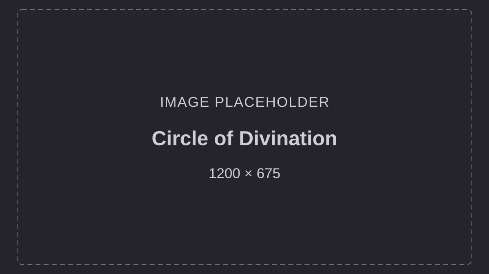

CIRCLE / RESEARCH & INTELLIGENCE
Divination
Make uncertainty visible through evidence and analysis.
Foundation blueprint · Proposed capabilities
Meaning & mandate
Divination symbolizes looking beyond what is immediately known; it is inquiry, not supernatural prediction.
Research, data analysis, trends, competitive intelligence and forecasting.
THE DELVERS
Meet the specialists.
 The Oracle
The OracleCyra
ResearcherInvestigate questions and synthesize credible evidence.
View profile ↗ The Seer
The SeerVesper
Data analystTurn data into interpretable findings and decisions.
View profile ↗ The Pathfinder
The PathfinderZephyr
Market intelligence specialistIdentify opportunities, competitors and emerging patterns.
View profile ↗COLLABORATION
Connected Circles.
Enchantment
Marketing & communication
ExploreCommerce
Business & finance
ExploreAlchemy
Product & innovation
ExploreCircle membership describes intended responsibility. It does not grant tool access or independent authority.